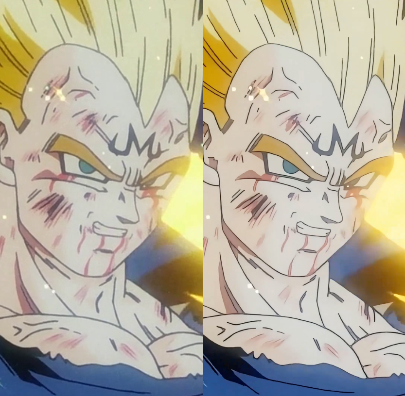
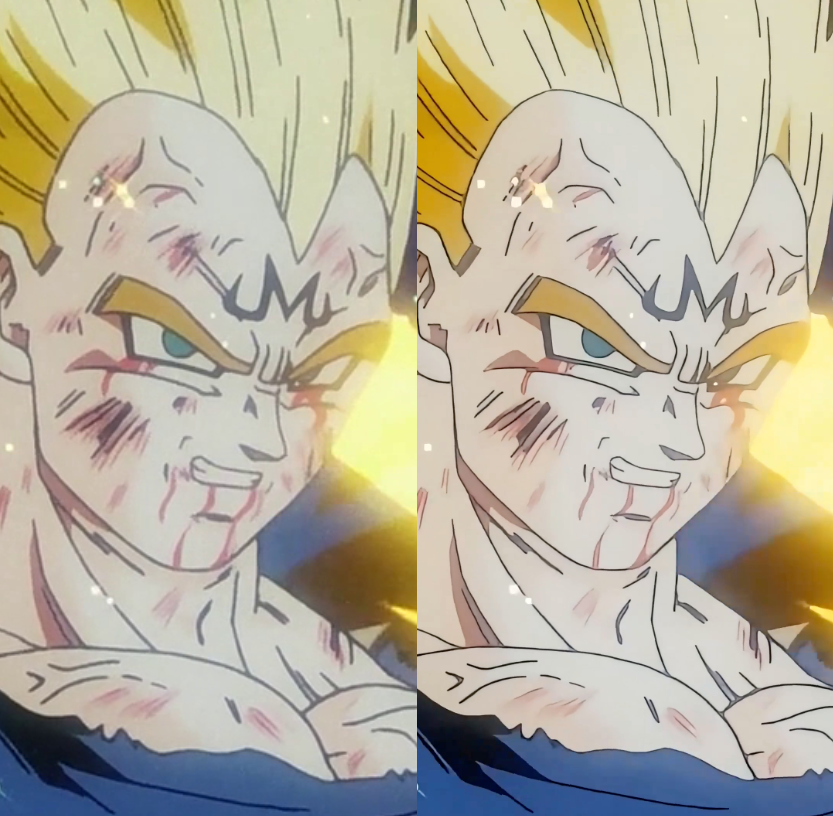
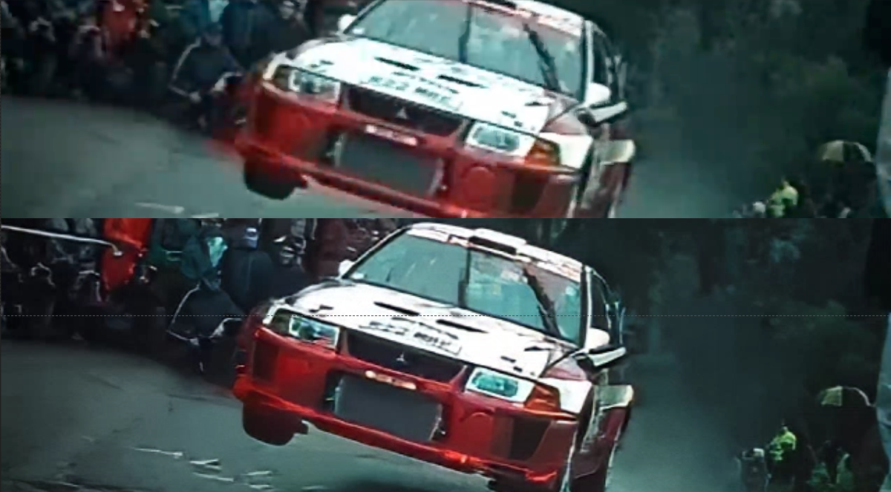
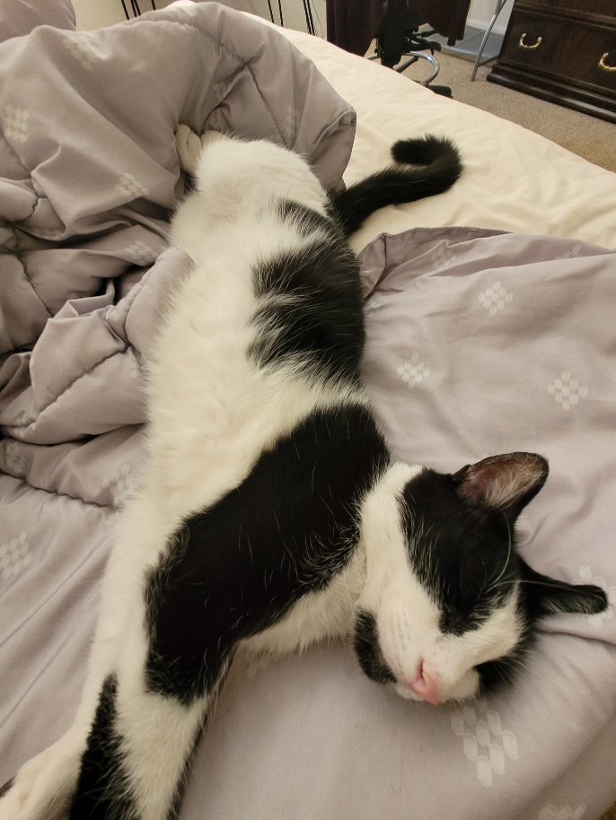

My website submission for HW2
Some cool things about me
- I am a Computer Science Student who is also pursuing a Data Science minor
- I have around 4 cats
- I cook a pretty damn good Chicken Alfredo, and also Fettucine Alfredo
- My favorite food by a mile is pizza, I love pizza
- I knew how to ride a skateboard
- I am into cars, my favorite car is a Nissan GTR R35
- I originally went into college for CS because I was into machine learning. I mainly was interested in Video Frame Interpolation and Image Enhancement & Upscaling
I used to upscale a lot of anime clips, here are a couple of before and after frames from some of those clips.
 

And here's a bonus one of a car pic
These are my cats
- Checkers
- Gremlin
- Blueberry
- Grumpy
Below is a picture of my cat
All the cats I have right now are stray cats, and checkers is the only one that stays inside our house. We found him in our backyard and he was immediately friendly with us. I believe that he used to be owned by other people but they abandoned him or something. I love him so much and I am happy he walked into my life.